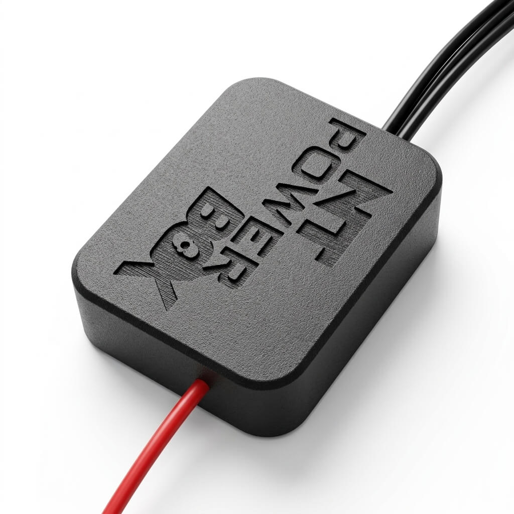
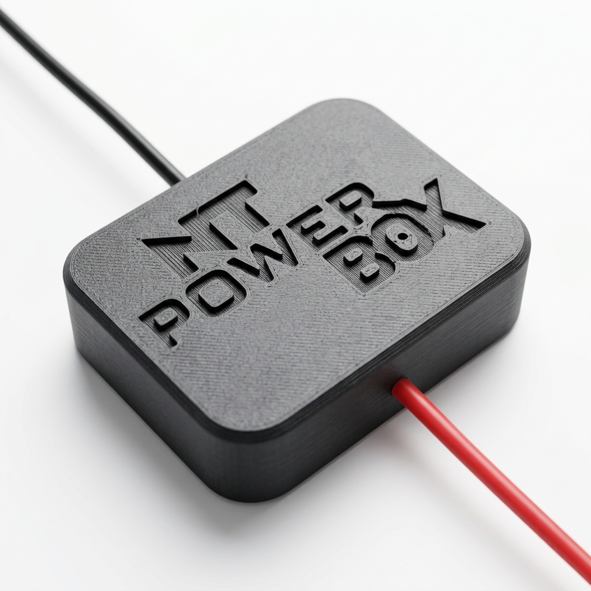
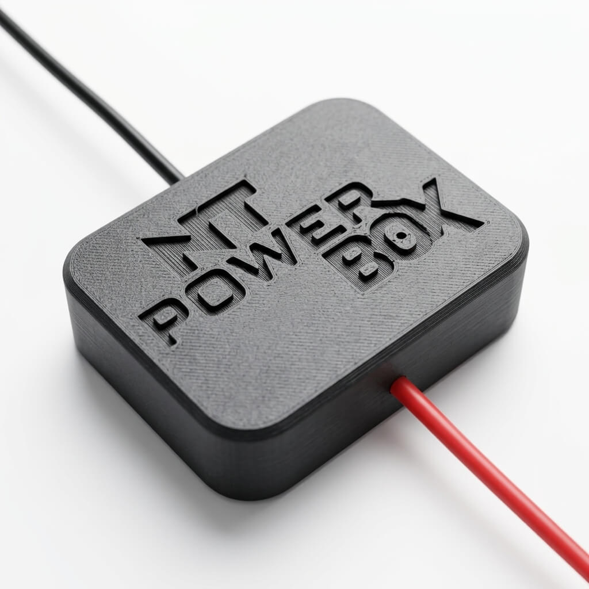

Sem reprogramar a central, sem cortar fios. O microprocessador NT Power Box (Versão 2026) descarboniza seu motor e otimiza a queima, mantendo a originalidade absoluta do seu veículo.

A queima incompleta de combustível (especialmente com as misturas adulteradas de hoje) gera um acúmulo agressivo de carvão dentro do seu motor.
Essa carbonização cria atrito interno. O resultado? Você pisa no acelerador e o carro simplesmente não responde como deveria.
O consumo vai nas alturas, seu óleo fica escuro e contaminado rapidamente, destruindo a vida útil do bloco. O problema não é o seu carro. É a queima ineficiente.

Não é mágica. É tecnologia em microprocessamento.
O circuito atua no sistema elétrico, forçando a queima total do combustível. Em exatos 4 segundos, a resposta do pedal muda drasticamente.
Ao queimar 100% do combustível na câmara, não sobra resíduo. Em cerca de 2 meses, seu motor se limpa de dentro para fora sozinho.
Sem combustível descendo para o cárter, seu óleo não vira "carvão". Mantém a viscosidade ideal até o final da vida útil (5.000km ou 10.000km).
Não mexe na vazão, não altera entrada de ar e não reprograma o módulo. Seu carro continua com os parâmetros originais de fábrica.
Não acredite apenas nas nossas palavras. Vá até o seu carro agora e passe o dedo por dentro do escapamento. Se sair sujo de fuligem preta, seu motor está desperdiçando combustível.
Após usar o NT Power Box e rodar até a descarbonização completa, faça o teste de novo. Seu escapamento estará limpo. A energia estará nas rodas, não na fumaça.

Quem instalou, não dirige mais sem.
"Meu Ford Focus 1.8 pulou de 13.5 para 17.9Km/l na estrada. O torque dele ficou muito melhor. O próximo teste será na troca de óleo. Recomendo a todos."
Desconhecido
Dono de Ford Focus 1.8
"Me chamo Adalberto e coloquei na minha Ecosport 1.6. Mudou de 10.5 para 14.9 km com um litro. Ela voltou a ficar como era originalmente... adorei."
Adalberto Sousa
Dono de Ecosport 1.6
"O torque do motor fire 1.4 ficou muito bom, respostas bem rápidas, foi um ótimo investimento......estou totalmente satisfeito."
Rizzieri
Motor Fire 1.4
Nós confiamos tanto na nanotecnologia do NT Power Box que oferecemos algo inédito: Garantia Infinita. Se o aparelho apresentar falha de fabricação, nós cobrimos. Você foca apenas em aproveitar a potência.
Fale com nossos especialistas agora mesmo e garanta a descarbonização, potência e economia do seu motor.
O que você recebe no atendimento: